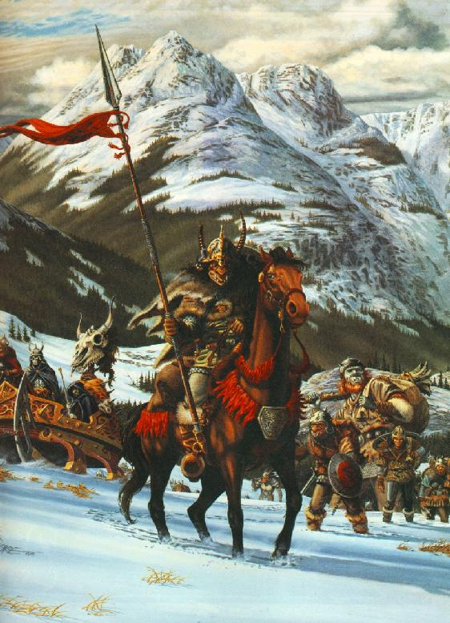

Players : MortalsBelow you will find information on just a few of your fellow adventurers in the realm of SneezyMUD. If you would like to have your information added to the site, please email me with whatever information you would like, including your character name(s), other stuff you might add includes your real name, personal information, email address, website, pictures and anything else you would like to include. Please send such information to webmaster@sneezy.stanford.edu. Anvil/Kedryn Calix/Barter/Wicca/Pagan Calix is a wandering thief who joined the Logrus
out of a desire for revenge against Galeks fellowship. Long ago he lived
in a so called 'pagan village' (read did not follow Galek) and went out
one day to gather materials for his parents. When he came back he found
that his home had been made an 'object lesson' and his parents nailed to
it's outside walls for all to see, then burned. Now all he lives for
is revenge and has one regret, that the Galek clerics don't repop Claw/Killjoy/Leromir/Kendon/Darkwind Real Name: Kenny
Walters I’ve been playing SneezyMUD since December 1998.
Blame Damian/Elon for introducing me to the MUD.
I was hooked the first time I played.
I’m a relative newbie compared to a lot of the players here, but
most of them seem to have accepted me pretty well.
My current playing goal is to hit L50 at least once in every class.
When I first stated this goal, I was laughed at and told it would
take me years to do it. In a
little over a year and a half, I’ve managed to hit L50 in 5 of the 7
available classes. I’m
going to provide some brief information on my L50’s. Claw, L50 Ogre Warrior Claw was my first character on Sneezy.
He had 37 glorious deaths before he finally made it to L50.
One of those occurred when Bryant typed ‘kill blob’ and
attacked Claw instead of Nivek. Oops.
He also was a victim of the infamous “Day of the Sandworm” in
which he was swallowed twice by that particularly nasty mob. Claw was the character with which I met many of the current
players on the MUD. He
frequently grouped with Darsant, Cern, Bryant and Spineless. He also is a former Guardian of the Step which is a position
of import within the Brotherhood of Galek.
Claw occasionally comes out of the inn to socialize with other
players or to even play. Killjoy, L50 Elf Cleric Killjoy was my first elf character and I have been
hooked on that particular race since.
Killjoy is not the typical hang around and heal the tank cleric. Killjoy has tanked several tough mobs due to the fact he is
able to wear dwarven-sized armor. Killjoy
also was the character that first taught me the value of grouping to gain
experience. As Killjoy, I met
Iradel who is one of my best friends on the MUD.
Killjoy was also there to help Iradel make it to L50 which brought
me as much satisfaction as getting any of my on pc’s to that level.
Killjoy comes out of the inn occasionally when someone needs a
little high level cleric help. Leromir, L50 Elf Monk Leromir may well be the best character I’ve made on
Sneezy. A lot of thanks goes
to Drizzt who gave me advice on making an elf monk.
Leromir made the trip to L50 quickly.
Lero is approaching 50 crushed skulls in his career.
Lero also comes out of the inn on occasion when other high levels
are on and need a monk hitter/tank. Kendon, L50 Human Deikhan Kendon, for a long time, was just a throw away
character that was sitting in my pfile.
I never really played him seriously until Leromir hit L50. Kendon is, like most deikhans, a strong tank.
He has completed all 3 deikhan sword quests and currently possesses
his Holy Devastator and Deikhan’s Shield of Truth.
Kendon comes out of the inn usually to practice smite.
However, he is ready whenever a group wants a tank to take down a
particularly tough mob. Darkwind, L50 Elf Cleric/Thief Darkwind is the character you’re most likely to see on the MUD at any given time. He is currently a leader within the Order of The Serpents faction and is usually around in that capacity to help current Serpents and to recruit new ones. Darky has spent a lot of time grouping with Enchantress aiding her in her quest to hit L50 which she succeeded in doing. Darkwind is also the character that I do the heaviest role-playing with. As such, he has much more of a story than my other pc’s. That story should eventually be available when The Order of the Serpents gets its on page on the Sneezy site.
Enchantress Heishiro Mitsurugi
Silvern Z'Tharnin, Blademage My name is Silvern, and I hail from the lands across the Agorian Ocean, far to the west. For a human, I was born with remarkable skills and powers, and learned from an early age to control both my physical body and arcane magic with almost unparalleled skill. I have been a servant of Galek for many years now, and am proud to be fulfilling the duties as both a High Crusader in the Melchezidek Knighthood, and as the Apostle of Internal Communications in the Brotherhood. I have many friends among the red serpents of Amber and the bloody tyrants of Logrus, however I myself cannot support the actions of those so inclined to follow the temptations of greed and bloodthirst. My love in life is knowledge; maps, tomes, stories and rumors, I live for the stuff, and have learned much in my extensive travels of The World. To further this cause, I also store the Brotherhood Archives, which is a repository of knowledge for all to benefit from. Shandon is a female, human thief who has been around since 3.1. Once a character who just hung out at the fountain because she didn't know anything else, slowly ventured out with the help of a few friends. Today, if she enters the realm, sits south of the inn because the real world has taken over. Missing the days of the old, she longs for adventures like those with Lexia, Deus, Khirath, Styx, etc., etc., If you look in the shadows hard enough you just might be able to find her.
Personal:
Name: Christine Roudebush
Age: 24
Hobbies: My husband, Mike, and
our two boys, Orin and Ethan. I love to drink Jack
Daniels, hang out with Crystal, drink and hang out with Crystal, camp,
hike, fish, canoe - all that other outdoorsman stuff. I like sleep
too, but I don't remember quite what that is...
Why I am not mudding like a fiend: I have two small children and we just bought a new house. Nuff
said.
Email: roudebushc@hotmail.com
"Tannith, son of Thark, son of ScavengerThor, son of
Thorace, son of Thorice the almost terrible...
Lord Templar Thy
Description: Leader of the Elite Wyvernriders as
well as the Templar Guard. Inside the heart of this grizzled old
warrior still burns the flame of passion--passion for
destruction--destruction of the weak. His steely green eyes
shine with youth like twin suns. Yet with his body failing, the
old warrior is waiting. Waiting for the next great one, the next
chosen, the next Lord Templar. Yet in the
meanwhile, his heart is still cold, his eyes still menacing, his blade
ever sharp, his enemies...corpses cooling in the field.

Vangard I am Vangard prophet of Elyon. I
was born in the year of the Prophets 620 in the lands known as the
Frontier. My Father Lancen was a just and true man who taught me much in
the way of the Knighthood and of my ancestry. Jedin my older brother used
to tell me of his adventures in the Knighthood while we played amidst the
forests of Mount Kolvir, and hunted beasts for food. It was there I was
called by Jevon to collect the records of my forefathers contained within
the catacombs of the Brightmoon Cathedral. The mighty Elyon in turn called
upon me to restore the fallen Order of Galek to its true beauty and
fullness of purpose. PERSONAL
|